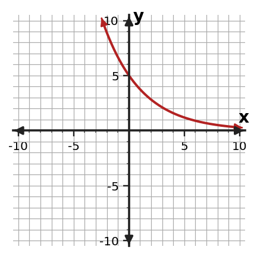

Algebra Practice 7.1
1. Use the table to decide whether the relationship is exponential growth or exponential decay. State the constant ratio that supports your decision.
| x | y |
|---|---|
| 0 | $\displaystyle 5$ |
| 1 | $\displaystyle \frac{15}{2}$ |
| 2 | $\displaystyle \frac{45}{4}$ |
| 3 | $\displaystyle \frac{135}{8}$ |
| 4 | $\displaystyle \frac{405}{16}$ |
2. The sequence is $\displaystyle 5$, $\displaystyle \frac{15}{2}$, $\displaystyle \frac{45}{4}$, $\displaystyle \frac{135}{8}$, $\ldots$ . Find the next two terms and explain whether the pattern shows exponential growth or decay.
3. A quantity increases by 6% each period. Write the multiplicative factor used from one period to the next.
4. An exponential relationship uses a multiplier of $\frac{3}{5}$ for each increase of 1 in $x$. Describe the percent change and tell whether it is growth or decay.
5. Consider $y=4(\frac{5}{4})^x$. Decide whether the relationship represents exponential growth or decay. Identify the initial value and the growth or decay factor.
6. Use the graph to decide whether the relationship shows exponential growth or decay. Give one graph feature that supports your decision.

7. Determine whether the table represents an exponential relationship. Support your conclusion with the pattern in the outputs.
| x | y |
|---|---|
| 0 | 5 |
| 1 | 10 |
| 2 | 20 |
| 3 | 40 |
| 4 | 80 |
8. A medication retains 70% of its amount each hour. State the multiplier and connect it to why a single exponential model is appropriate.
9. The equation is $y=5(\frac{5}{4})^x$. Use the table to determine whether it represents the same relationship. Give evidence from at least two rows.
| x | y |
|---|---|
| 0 | $\displaystyle 5$ |
| 1 | $\displaystyle \frac{25}{4}$ |
| 2 | $\displaystyle \frac{125}{16}$ |
| 3 | $\displaystyle \frac{625}{64}$ |
10. The table follows an exponential pattern. Find the missing output and state the constant ratio.
| x | y |
|---|---|
| 0 | $\displaystyle 3$ |
| 1 | $\displaystyle 6$ |
| 2 | $\displaystyle 12$ |
| 3 | ? |
| 4 | $\displaystyle 48$ |
11. Use the table to decide whether the relationship is exponential growth or exponential decay. State the constant ratio that supports your decision.
| x | y |
|---|---|
| 0 | $\displaystyle 64$ |
| 1 | $\displaystyle 32$ |
| 2 | $\displaystyle 16$ |
| 3 | $\displaystyle 8$ |
| 4 | $\displaystyle 4$ |
12. The sequence is $\displaystyle 7$, $\displaystyle \frac{28}{3}$, $\displaystyle \frac{112}{9}$, $\displaystyle \frac{448}{27}$, $\ldots$ . Find the next two terms and explain whether the pattern shows exponential growth or decay.
13. A quantity increases by 20% each period. Write the multiplicative factor used from one period to the next.
14. An exponential relationship uses a multiplier of $\frac{7}{5}$ for each increase of 1 in $x$. Describe the percent change and tell whether it is growth or decay.
15. Consider $y=2(3)^x$. Decide whether the relationship represents exponential growth or decay. Identify the initial value and the growth or decay factor.
16. Use the graph to decide whether the relationship shows exponential growth or decay. Give one graph feature that supports your decision.

17. Determine whether the table represents an exponential relationship. Support your conclusion with the pattern in the outputs.
| x | y |
|---|---|
| 0 | 5 |
| 1 | 10 |
| 2 | 15 |
| 3 | 20 |
| 4 | 25 |
18. The newsletter subscribers increases by 12% each week. Use the repeated-percent behavior to justify an exponential model and identify the per-week multiplier.
19. Solve $\displaystyle x^{2} + 3 x - 1=0$ using the quadratic formula. Give exact solutions.
20. For $\displaystyle x^{2} - 6 x + 5=0$, compute the discriminant and use it to state how many real solutions the equation has.
21. A height model leads to the equation $\displaystyle 2 t^{2} - 14 t - 5=0$ for possible times when an object is at ground level, where $t$ is measured in seconds and $t\ge 0$. Use the quadratic formula and interpret the meaningful solution.
22. Factor $\displaystyle 25x^2-4$ completely.
23. Factor $x^{2} + 6 x + 9$ completely.
24. Identify the special factoring pattern in $x^{2} + 8 x + 16$ and factor the expression.